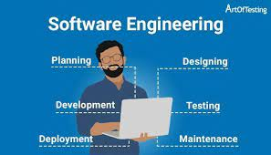

Before I started college, I have neven been experienced with computer science. My high school life was spent in China, most computer classes that I took before were like working with excel or powerpoint, but I have been obsessed with FC games since I was a child, and dreamed that I could make my own game.
After coming to the United States, I decided that my major was computer science. Although I passed the ESOL course, I found that the language is still my biggest obstacle. I believe I can overcome this difficulty, because it’s my own choice.
Writing code was not easy for me. Many homeworks from other courses takes me around double or trible times as long as other students. At the beginning, all the seats of ICS 314 were full, and I was lucky to be drawn from the waitlist. I have great expectations for this class and I am so excited about making web pages,In my opinion a good website can make a good first impression on others.I believe that in the ICS 314 class, I will learn a lot of techniques that can be used in the future.

Software engineering let me know that the development of a software project is actually a project, and the entire development process can be effectively organized;
for each stage of the development process, there are already many best practices for solving problems, and there are many ways to help us efficiently Complete tasks; we can also use tools to assist management and improve development efficiency